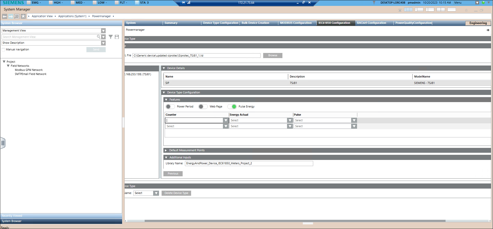

Create Device Type
- In System Browser, select Application View > Powermanager.
- Open IEC 61850 Configuration tab.
- Navigate to Create Device Type > Select File, Browse and open IID file for device.
- The file browsed appears under IEC Objects.
- Default measurement points will auto populate using MMXU node.
- Expand the IEC object tree and select the node. Drag and drop the data attribute component to the Device Type Configuration.
NOTE: If the browsed file has fault number data point, it will display in the Device Type Configuration by default. - Once the Object/Property Name appears on the screen, select the Mapping Object Name for required data attribute component.
- Description and Group are auto populated, select dropdown to edit if required.
- Click Next.
- In Measurement Points, configure parameters Unit, Display and Archive.
- By default, Active will be selected.
- In Favorites, configure parameters Measurement Point, Parameter, Duration and Interval.
- Navigate to Trend and click New to add different groups.
NOTE: For one Group you can add seven Trends. - Click Next.
- In the Feature expander, the Power period radio button will be enabled by default, if any of the measurement point group is selected as power period.
- Enable Web Page radio button and connect via https, to see the device on web page.
- Enable Pulse Energy radio button to enable the COHO calculation.

- Navigate to Additional Inputs.
- By default, Library Name field is available. If required user can drag and drop Library Name filed.
- Provide the Device Type Name and Device Type Description.
NOTE: By default, device type is created with Library Name under project node. Library Name cannot be edited. - Click Create Device Type.
- Device type is created successfully.